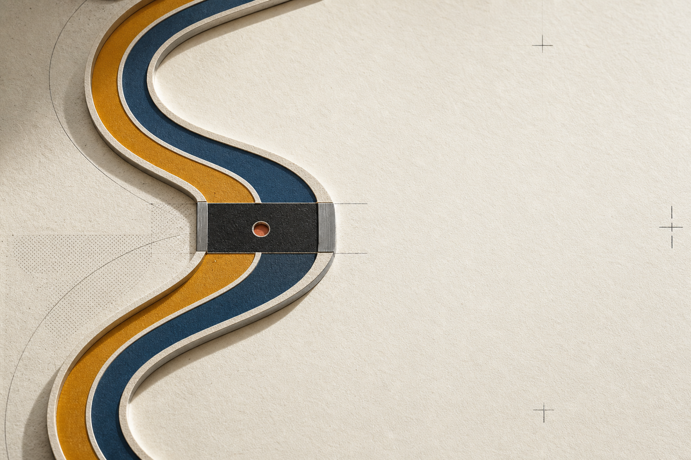

On-chain events, deterministic risk gates, and execution state.
SIGNAL OCHRE / #C9912F
LASZLO and JANOS remain independent market labs. The moment they meet is not a merger—it is the same evidence threshold, made visible.

Szigor is the public standard of rigor—not a holding company and not a third product.
On-chain events, deterministic risk gates, and execution state.
Point-in-time company evidence, portfolios, and broker reconciliation.
Monochrome first. If the mark needs color or texture to make sense, it is not ready.
Every crop, divider, motion beat, and evidence label can inherit the same approach–align–resolve logic.
Two systems enter with separate context.
The center holds on common evidence.
Independent outcomes remain legible.
#F3EEE4#FBF8F1#1E1D1A#BC6548#C9912F#345D7EOn-chain market lab
US equity market lab
Evidence before action.
SZIGOR RESEARCH / VISUAL SYSTEM 0.2